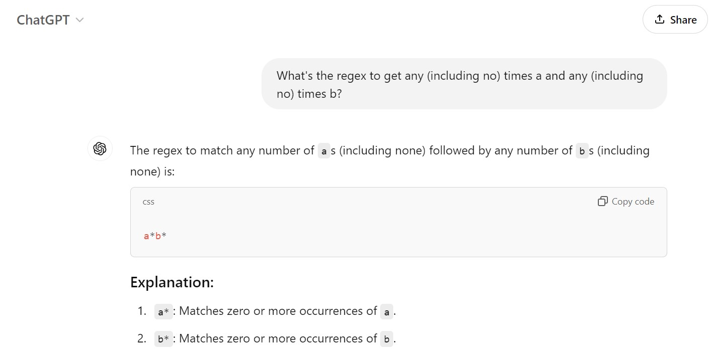

Building Knowledge Graph-Based Agents with Structured Text Generation and Open-Weights Models
Alonso Silva (twitter/X: @alonsosilva)
Introduction
Structured Generation
The problem
scikit-llm: https://skllm.beastbyte.ai/
Show me the prompt!
scikit-llm prompts: https://github.com/iryna-kondr/scikit-llm/blob/main/skllm/prompts/templates.py
LLMs are samplers
https://alonsosilva-nexttokenprediction.hf.space
Regular Expression (regex)
Deterministic Finite Automata (DFA)

Back to the problem
scikit-llm prompts: https://github.com/iryna-kondr/scikit-llm/blob/main/skllm/prompts/templates.py
From regular expression (regex) to deterministic finite automata (DFA)
Example sentiment analysis:

Life is hard

What’s in a “label”?

Knowledge Graph Construction
with open('/home/asilva/quarto/2024-PyData-Global/assets/curie.txt', "r") as f:
curie_text = f.read()
print(curie_text)When Marie Curie came to the United States for the first time, in May 1921, she had already discovered the elements radium and polonium, coined the term “radio-active” and won the Nobel Prize—twice. But the Polish-born scientist, almost pathologically shy and accustomed to spending most of her time in her Paris laboratory, was stunned by the fanfare that greeted her. In 1898 she indeed identified one of the substances and named it polonium, after her homeland. Five months later, she identified a second element, which the world came to know as radium. Curie described the elements she studied as “radio-active.”
In 1894, she met Pierre Curie, a 35-year-old physicist at a French technical college who had been studying crystals and magnetism. More than a decade before, he and his brother Jacques had discovered piezoelectricity, the electric charge produced in solid materials under pressure. Pierre was taken by Marie’s uncommon intellect and drive, and he proposed to her. They were married in 1895 in a civil service attended by family and a few friends.
Both Curies shared the Nobel Prize in physics with Becquerel in 1903. It was the first Nobel to be awarded to a woman. In 1911, rumors spread that Curie was having an affair with the prominent physicist Paul Langevin, a man five years her junior who had been Pierre’s student and had worked closely with Albert Einstein. The front-page coverage of the scandal threatened to overshadow another news story later that year: her second Nobel Prize.
This one, in chemistry, was for the discovery of polonium and radium. In her acceptance speech in Stockholm, she paid tribute to her husband but also made clear that her work was independent from his, spelling out their separate contributions and describing the discoveries she had made after his death.
Chunking
['When Marie Curie came to the United States for the first time, in May 1921, she had already discovered the elements radium and polonium, coined the term “radio-active” and won the Nobel Prize—twice. But the Polish-born scientist, almost pathologically shy and accustomed to spending most of her time in her Paris laboratory, was stunned by the fanfare that greeted her. In 1898 she indeed identified one of the substances and named it polonium, after her homeland. Five months later, she identified a second element, which the world came to know as radium. Curie described the elements she studied as “radio-active.”',
'In 1894, she met Pierre Curie, a 35-year-old physicist at a French technical college who had been studying crystals and magnetism. More than a decade before, he and his brother Jacques had discovered piezoelectricity, the electric charge produced in solid materials under pressure. Pierre was taken by Marie’s uncommon intellect and drive, and he proposed to her. They were married in 1895 in a civil service attended by family and a few friends.',
'Both Curies shared the Nobel Prize in physics with Becquerel in 1903. It was the first Nobel to be awarded to a woman. In 1911, rumors spread that Curie was having an affair with the prominent physicist Paul Langevin, a man five years her junior who had been Pierre’s student and had worked closely with Albert Einstein. The front-page coverage of the scandal threatened to overshadow another news story later that year: her second Nobel Prize.',
'This one, in chemistry, was for the discovery of polonium and radium. In her acceptance speech in Stockholm, she paid tribute to her husband but also made clear that her work was independent from his, spelling out their separate contributions and describing the discoveries she had made after his death.\n']'\\{[ ]?"nodes"[ ]?:[ ]?\\[[ ]?((\\{[ ]?"id"[ ]?:[ ]?(-)?(0|[1-9][0-9]*)[ ]?,[ ]?"label"[ ]?:[ ]?"([^"\\\\\\x00-\\x1F\\x7F-\\x9F]|\\\\["\\\\])*"[ ]?,[ ]?"property"[ ]?:[ ]?("([^"\\\\\\x00-\\x1F\\x7F-\\x9F]|\\\\["\\\\])*"|null)[ ]?\\})(,[ ]?(\\{[ ]?"id"[ ]?:[ ]?(-)?(0|[1-9][0-9]*)[ ]?,[ ]?"label"[ ]?:[ ]?"([^"\\\\\\x00-\\x1F\\x7F-\\x9F]|\\\\["\\\\])*"[ ]?,[ ]?"property"[ ]?:[ ]?("([^"\\\\\\x00-\\x1F\\x7F-\\x9F]|\\\\["\\\\])*"|null)[ ]?\\})){0,})?[ ]?\\][ ]?,[ ]?"edges"[ ]?:[ ]?\\[[ ]?((\\{[ ]?"source"[ ]?:[ ]?(-)?(0|[1-9][0-9]*)[ ]?,[ ]?"target"[ ]?:[ ]?(-)?(0|[1-9][0-9]*)[ ]?,[ ]?"label"[ ]?:[ ]?"([^"\\\\\\x00-\\x1F\\x7F-\\x9F]|\\\\["\\\\])*"[ ]?,[ ]?"property"[ ]?:[ ]?("([^"\\\\\\x00-\\x1F\\x7F-\\x9F]|\\\\["\\\\])*"|null)[ ]?\\})(,[ ]?(\\{[ ]?"source"[ ]?:[ ]?(-)?(0|[1-9][0-9]*)[ ]?,[ ]?"target"[ ]?:[ ]?(-)?(0|[1-9][0-9]*)[ ]?,[ ]?"label"[ ]?:[ ]?"([^"\\\\\\x00-\\x1F\\x7F-\\x9F]|\\\\["\\\\])*"[ ]?,[ ]?"property"[ ]?:[ ]?("([^"\\\\\\x00-\\x1F\\x7F-\\x9F]|\\\\["\\\\])*"|null)[ ]?\\})){0,})?[ ]?\\][ ]?\\}'<|im_start|>system
You are a world class AI model who answers questions in JSON with correct Pydantic schema. Here's the json schema you must adhere to:
<schema>
{'$defs': {'Edge': {'description': 'Edge of the Knowledge Graph', 'properties': {'source': {'description': 'Unique source of the edge', 'title': 'Source', 'type': 'integer'}, 'target': {'description': 'Unique target of the edge', 'title': 'Target', 'type': 'integer'}, 'label': {'description': 'Label of the edge', 'title': 'Label', 'type': 'string'}, 'property': {'anyOf': [{'type': 'string'}, {'type': 'null'}], 'description': 'Property of the edge', 'title': 'Property'}}, 'required': ['source', 'target', 'label', 'property'], 'title': 'Edge', 'type': 'object'}, 'Node': {'description': 'Node of the Knowledge Graph', 'properties': {'id': {'description': 'Unique identifier of the node', 'title': 'Id', 'type': 'integer'}, 'label': {'description': 'Label of the node', 'title': 'Label', 'type': 'string'}, 'property': {'anyOf': [{'type': 'string'}, {'type': 'null'}], 'description': 'Property of the node', 'title': 'Property'}}, 'required': ['id', 'label', 'property'], 'title': 'Node', 'type': 'object'}}, 'description': 'Generated Knowledge Graph', 'properties': {'nodes': {'description': 'List of nodes of the knowledge graph', 'items': {'$ref': '#/$defs/Node'}, 'title': 'Nodes', 'type': 'array'}, 'edges': {'description': 'List of edges of the knowledge graph', 'items': {'$ref': '#/$defs/Edge'}, 'title': 'Edges', 'type': 'array'}}, 'required': ['nodes', 'edges'], 'title': 'KnowledgeGraph', 'type': 'object'}
</schema><|im_end|>
<|im_start|>user
Describe the following text as a detailed knowledge graph in JSON:
Alice loves Bob.<|im_end|>
<|im_start|>assistant
<schema><|im_start|>system
You are a world class AI model who answers questions in JSON with correct Pydantic schema. Here's the json schema you must adhere to:
<schema>
{'$defs': {'Edge': {'description': 'Edge of the Knowledge Graph', 'properties': {'source': {'description': 'Unique source of the edge', 'title': 'Source', 'type': 'integer'}, 'target': {'description': 'Unique target of the edge', 'title': 'Target', 'type': 'integer'}, 'label': {'description': 'Label of the edge', 'title': 'Label', 'type': 'string'}, 'property': {'anyOf': [{'type': 'string'}, {'type': 'null'}], 'description': 'Property of the edge', 'title': 'Property'}}, 'required': ['source', 'target', 'label', 'property'], 'title': 'Edge', 'type': 'object'}, 'Node': {'description': 'Node of the Knowledge Graph', 'properties': {'id': {'description': 'Unique identifier of the node', 'title': 'Id', 'type': 'integer'}, 'label': {'description': 'Label of the node', 'title': 'Label', 'type': 'string'}, 'property': {'anyOf': [{'type': 'string'}, {'type': 'null'}], 'description': 'Property of the node', 'title': 'Property'}}, 'required': ['id', 'label', 'property'], 'title': 'Node', 'type': 'object'}}, 'description': 'Generated Knowledge Graph', 'properties': {'nodes': {'description': 'List of nodes of the knowledge graph', 'items': {'$ref': '#/$defs/Node'}, 'title': 'Nodes', 'type': 'array'}, 'edges': {'description': 'List of edges of the knowledge graph', 'items': {'$ref': '#/$defs/Edge'}, 'title': 'Edges', 'type': 'array'}}, 'required': ['nodes', 'edges'], 'title': 'KnowledgeGraph', 'type': 'object'}
</schema><|im_end|>
<|im_start|>user
Describe the following text as a detailed knowledge graph in JSON:
When Marie Curie came to the United States for the first time, in May 1921, she had already discovered the elements radium and polonium, coined the term “radio-active” and won the Nobel Prize—twice. But the Polish-born scientist, almost pathologically shy and accustomed to spending most of her time in her Paris laboratory, was stunned by the fanfare that greeted her. In 1898 she indeed identified one of the substances and named it polonium, after her homeland. Five months later, she identified a second element, which the world came to know as radium. Curie described the elements she studied as “radio-active.”<|im_end|>
<|im_start|>assistant
<schema>[{'id': 1, 'label': 'Marie Curie', 'property': None},
{'id': 2, 'label': 'United States', 'property': None},
{'id': 3, 'label': 'Radium', 'property': None},
{'id': 4, 'label': 'Polonium', 'property': None},
{'id': 5, 'label': 'Nobel Prize', 'property': None}][{'source': 1, 'target': 2, 'label': 'visited', 'property': 'First time'},
{'source': 1, 'target': 3, 'label': 'discovered', 'property': None},
{'source': 1, 'target': 4, 'label': 'discovered', 'property': None},
{'source': 1, 'target': 5, 'label': 'won', 'property': 'twice'},
{'source': 1, 'target': 5, 'label': 'awarded', 'property': None}]'\\{[ ]?"nodes"[ ]?:[ ]?\\[[ ]?((\\{[ ]?"id"[ ]?:[ ]?(-)?(0|[1-9][0-9]*)[ ]?,[ ]?"label"[ ]?:[ ]?"([^"\\\\\\x00-\\x1F\\x7F-\\x9F]|\\\\["\\\\])*"[ ]?,[ ]?"property"[ ]?:[ ]?("([^"\\\\\\x00-\\x1F\\x7F-\\x9F]|\\\\["\\\\])*"|null)[ ]?\\})(,[ ]?(\\{[ ]?"id"[ ]?:[ ]?(-)?(0|[1-9][0-9]*)[ ]?,[ ]?"label"[ ]?:[ ]?"([^"\\\\\\x00-\\x1F\\x7F-\\x9F]|\\\\["\\\\])*"[ ]?,[ ]?"property"[ ]?:[ ]?("([^"\\\\\\x00-\\x1F\\x7F-\\x9F]|\\\\["\\\\])*"|null)[ ]?\\})){0,})?[ ]?\\][ ]?,[ ]?"edges"[ ]?:[ ]?\\[[ ]?((\\{[ ]?"source"[ ]?:[ ]?(-)?(0|[1-9][0-9]*)[ ]?,[ ]?"target"[ ]?:[ ]?(-)?(0|[1-9][0-9]*)[ ]?,[ ]?"label"[ ]?:[ ]?"([^"\\\\\\x00-\\x1F\\x7F-\\x9F]|\\\\["\\\\])*"[ ]?,[ ]?"property"[ ]?:[ ]?("([^"\\\\\\x00-\\x1F\\x7F-\\x9F]|\\\\["\\\\])*"|null)[ ]?\\})(,[ ]?(\\{[ ]?"source"[ ]?:[ ]?(-)?(0|[1-9][0-9]*)[ ]?,[ ]?"target"[ ]?:[ ]?(-)?(0|[1-9][0-9]*)[ ]?,[ ]?"label"[ ]?:[ ]?"([^"\\\\\\x00-\\x1F\\x7F-\\x9F]|\\\\["\\\\])*"[ ]?,[ ]?"property"[ ]?:[ ]?("([^"\\\\\\x00-\\x1F\\x7F-\\x9F]|\\\\["\\\\])*"|null)[ ]?\\})){0,})?[ ]?\\][ ]?\\}'[[{'generated_text': '{"nodes": [{"id": 1, "label": "Marie Curie", "property": null}, {"id": 2, "label": "United States", "property": null}, {"id": 3, "label": "Paris", "property": null}, {"id": 4, "label": "Poland", "property": null}, {"id": 5, "label": "Radium", "property": null}, {"id": 6, "label": "Polonium", "property": null}], "edges": [{"source": 1, "target": 2, "label": "Visited", "property": "First time"}, {"source": 1, "target": 3, "label": "Worked in", "property": null}, {"source": 1, "target": 4, "label": "Born in", "property": null}, {"source": 1, "target": 5, "label": "Discovered", "property": null}, {"source": 1, "target": 6, "label": "Discovered", "property": null}, {"source": 1, "target": 6, "label": "Named", "property": "after homeland"}, {"source": 1, "target": 5, "label": "Discovered", "property": "after five months"}, {"source": 1, "target": 5, "label": "Described property", "property": "radio-active"}]}'}],
[{'generated_text': '{"nodes": [{"id": 1, "label": "Marie Curie", "property": null}, {"id": 2, "label": "Pierre Curie", "property": null}, {"id": 3, "label": "Jacques Curie", "property": null}], "edges": [{"source": 1, "target": 2, "label": "met", "property": "In 1894"}, {"source": 2, "target": 3, "label": "brother", "property": null}, {"source": 2, "target": 1, "label": "proposed to", "property": "because of her uncommon intellect and drive"}, {"source": 1, "target": 2, "label": "married", "property": "In 1895 in a civil service"}]}'}],
[{'generated_text': '{"nodes": [{"id": 1, "label": "Marie Curie", "property": null}, {"id": 2, "label": "Pierre Curie", "property": null}, {"id": 3, "label": "Henri Becquerel", "property": null}, {"id": 4, "label": "Paul Langevin", "property": null}, {"id": 5, "label": "Albert Einstein", "property": null}], "edges": [{"source": 1, "target": 2, "label": "spouse", "property": null}, {"source": 1, "target": 3, "label": "shared Nobel Prize in physics", "property": "1903"}, {"source": 1, "target": 4, "label": "affair rumors", "property": null}, {"source": 1, "target": 5, "label": "worked with", "property": null}, {"source": 2, "target": 3, "label": "shared Nobel Prize in physics", "property": "1903"}, {"source": 2, "target": 4, "label": "student of", "property": null}, {"source": 2, "target": 5, "label": "worked with", "property": null}, {"source": 3, "target": 1, "label": "shared Nobel Prize in physics", "property": "1903"}, {"source": 3, "target": 2, "label": "shared Nobel Prize in physics", "property": "1903"}, {"source": 4, "target": 1, "label": "affair rumors", "property": null}, {"source": 4, "target": 2, "label": "student of", "property": null}, {"source": 4, "target": 5, "label": "worked with", "property": null}, {"source": 5, "target": 2, "label": "worked with", "property": null}, {"source": 5, "target": 4, "label": "worked with", "property": null}]}'}],
[{'generated_text': '{"nodes": [{"id": 1, "label": "Marie Curie", "property": null}, {"id": 2, "label": "Polonium", "property": null}, {"id": 3, "label": "Radium", "property": null}, {"id": 4, "label": "Pierre Curie", "property": null}], "edges": [{"source": 1, "target": 2, "label": "discovered", "property": null}, {"source": 1, "target": 3, "label": "discovered", "property": null}, {"source": 1, "target": 4, "label": "married", "property": null}]}'}]][[{'generated_text': '{"nodes": [{"id": 1, "label": "Marie Curie", "property": null}, {"id": 2, "label": "United States", "property": null}, {"id": 3, "label": "Paris", "property": null}, {"id": 4, "label": "Poland", "property": null}, {"id": 5, "label": "Radium", "property": null}, {"id": 6, "label": "Polonium", "property": null}], "edges": [{"source": 1, "target": 2, "label": "Visited", "property": "First time"}, {"source": 1, "target": 3, "label": "Worked in", "property": null}, {"source": 1, "target": 4, "label": "Born in", "property": null}, {"source": 1, "target": 5, "label": "Discovered", "property": null}, {"source": 1, "target": 6, "label": "Discovered", "property": null}, {"source": 1, "target": 6, "label": "Named", "property": "after homeland"}, {"source": 1, "target": 5, "label": "Discovered", "property": "after five months"}, {"source": 1, "target": 5, "label": "Described property", "property": "radio-active"}]}'}],
[{'generated_text': '{"{{"{"{{"{{"{{"{{"{{"{{"{{"{{"{{"{{"{{"{{"{{"{{"{{"{{"{{"{ "nodes": [{"id": 1, "label": "Marie Curie", "property": null}, {"id": 2, "label": "Pierre Curie", "property": null}, {"id": 3, "label": "Jacques Curie", "property": null}, {"id": 4, "label": "piezoelectricity", "property": null}], "edges": [{"source": 1, "target": 2, "label": "met", "property": "In 1894"}, {"source": 2, "target": 1, "label": "proposed to", "property": null}, {"source": 1, "target": 2, "label": "married", "property": "In 1895"}, {"source": 2, "target": 3, "label": "discovered", "property": "piezoelectricity"}, {"source": 2, "target": 4, "label": "studied", "property": "crystals and magnetism"}] }'}],
[{'generated_text': '{"{{"{"{{"{{"{{"{{"{{"{{"{{"{{"{{"{{"{{"{{"{{"{{"{{"{{"{{"{{"{ "nodes": [{"id": 1, "label": "Marie Curie", "property": null}, {"id": 2, "label": "Pierre Curie", "property": null}, {"id": 3, "label": "Henri Becquerel", "property": null}, {"id": 4, "label": "Paul Langevin", "property": null}, {"id": 5, "label": "Albert Einstein", "property": null}], "edges": [{"source": 1, "target": 2, "label": "spouse", "property": null}, {"source": 1, "target": 3, "label": "shared Nobel Prize in physics", "property": "1903"}, {"source": 1, "target": 4, "label": "affair rumors", "property": null}, {"source": 1, "target": 5, "label": "worked with", "property": null}, {"source": 2, "target": 3, "label": "shared Nobel Prize in physics", "property": "1903"}, {"source": 2, "target": 4, "label": "student of", "property": null}, {"source": 2, "target": 5, "label": "worked with", "property": null}, {"source": 3, "target": 4, "label": "shared Nobel Prize in physics", "property": "1903"}, {"source": 3, "target": 5, "label": "worked with", "property": null}, {"source": 4, "target": 5, "label": "worked with", "property": null}]}'}],
[{'generated_text': '{"{{"{"{{"{{"{{"{{"{{"{{"{{"{{"{{"{{"{{"{{"{{"{{"{{"{{"{{"{{"{{"{{"{{"{{"{{"{{"{{"{{"{{"{{"{{"{{"{{"{{"{{"{{"{{"{{"{ "nodes": [{"id": 1, "label": "Marie Curie", "property": "Scientist"}, {"id": 2, "label": "Polonium", "property": "Element"}, {"id": 3, "label": "Radium", "property": "Element"}, {"id": 4, "label": "Pierre Curie", "property": "Scientist"}, {"id": 5, "label": "Husband", "property": "Relationship"}, {"id": 6, "label": "Stockholm", "property": "Place"}, {"id": 7, "label": "Acceptance Speech", "property": "Event"}], "edges": [{"source": 1, "target": 2, "label": "Discovered", "property": "polonium"}, {"source": 1, "target": 3, "label": "Discovered", "property": "radium"}, {"source": 1, "target": 4, "label": "Spouse", "property": "Pierre Curie"}, {"source": 1, "target": 6, "label": "Awarded", "property": "Stockholm"}, {"source": 1, "target": 7, "label": "Delivered", "property": "Acceptance Speech"}] }'}]]{"nodes": [{"id": 1, "label": "Marie Curie", "property": null}, {"id": 2, "label": "United States", "property": null}, {"id": 3, "label": "Radium", "property": null}, {"id": 4, "label": "Polonium", "property": null}, {"id": 5, "label": "Nobel Prize", "property": null}], "edges": [{"source": 1, "target": 2, "label": "visited", "property": "First time"}, {"source": 1, "target": 3, "label": "discovered", "property": null}, {"source": 1, "target": 4, "label": "discovered", "property": null}, {"source": 1, "target": 5, "label": "won", "property": "twice"}, {"source": 1, "target": 5, "label": "awarded", "property": null}]}
{"{{"{"{ "nodes": [ { "id": 1, "label": "Nobel Prize", "property": null }, { "id": 2, "label": "Polish-born scientist", "property": null }, { "id": 3, "label": "Paris laboratory", "property": null }, { "id": 4, "label": "1898", "property": null } ], "edges": [ { "source": 2, "target": 1, "label": "received", "property": "twice" }, { "source": 2, "target": 3, "label": "works in", "property": null }, { "source": 1, "target": 4, "label": "awarded in", "property": null } ] }
{"{{"{"nodes": [{"id": 1, "label": "Marie Curie", "property": null}, {"id": 2, "label": "Polonium", "property": null}, {"id": 3, "label": "Radium", "property": null}], "edges": [{"source": 1, "target": 2, "label": "Identified", "property": "1898"}, {"source": 1, "target": 3, "label": "Identified", "property": "1898"}] }
{"{{"{"{{"{{"{{"{{"{{"{{"{{"{{"{{"{{"{{"{{"{{"{{"{ "nodes": [{"id": 1, "label": "Marie Curie", "property": "Scientist"}, {"id": 2, "label": "Radium", "property": "Element"}, {"id": 3, "label": "Radioactive", "property": "Property"}], "edges": [{"source": 1, "target": 2, "label": "Discovered", "property": "Radium"}, {"source": 1, "target": 3, "label": "Described", "property": "Radio-active"}] }
{"{{"{"{ "nodes": [ { "id": 1, "label": "Marie Curie", "property": null }, { "id": 2, "label": "Pierre Curie", "property": null }, { "id": 3, "label": "Jacques Curie", "property": null } ], "edges": [ { "source": 1, "target": 2, "label": "met", "property": "In 1894" }, { "source": 2, "target": 3, "label": "brother", "property": null }, { "source": 2, "target": 1, "label": "studied crystals and magnetism", "property": "at a French technical college" } ] }
{"{{"{"{{"{{"{{"nodes": [{"id": 1, "label": "Marie Curie", "property": null}, {"id": 2, "label": "Pierre Curie", "property": null}, {"id": 3, "label": "Piezoelectricity", "property": null}], "edges": [{"source": 1, "target": 3, "label": "discovered", "property": null}, {"source": 2, "target": 3, "label": "studied", "property": null}, {"source": 1, "target": 2, "label": "proposed to", "property": null}, {"source": 2, "target": 1, "label": "married", "property": null}]}
{"{{"{"{{"{{"{{"{{"{{"{{"{{"{{"{{"{{"{{"{{"{{"{ "nodes": [{"id": 1, "label": "Person 1", "property": null}, {"id": 2, "label": "Person 2", "property": null}, {"id": 3, "label": "Event", "property": null}], "edges": [{"source": 1, "target": 2, "label": "MARRIED", "property": "in 1895"}, {"source": 2, "target": 3, "label": "ATTENDED", "property": "a civil service attended by family and a few friends"}] }
{"{ "nodes": [ {"id": 1, "label": "Marie Curie", "property": null}, {"id": 2, "label": "Pierre Curie", "property": null}, {"id": 3, "label": "Henri Becquerel", "property": null}, {"id": 4, "label": "Nobel Prize", "property": null}, {"id": 5, "label": "Affair", "property": null} ], "edges": [ {"source": 1, "target": 2, "label": "spouse", "property": null}, {"source": 1, "target": 3, "label": "shared Nobel Prize in physics", "property": "1903"}, {"source": 2, "target": 4, "label": "awarded", "property": "first Nobel to be awarded to a woman"}, {"source": 3, "target": 4, "label": "awarded", "property": "1903"}, {"source": 1, "target": 5, "label": "rumored affair with", "property": "1911"} ]}
{"{{"{"{{"{{"{{"{{"nodes": [{"id": 1, "label": "Marie Curie", "property": null}, {"id": 2, "label": "Paul Langevin", "property": null}, {"id": 3, "label": "Pierre Curie", "property": null}, {"id": 4, "label": "Albert Einstein", "property": null}], "edges": [{"source": 1, "target": 2, "label": "romantic relationship", "property": null}, {"source": 2, "target": 3, "label": "student-teacher relationship", "property": null}, {"source": 2, "target": 4, "label": "collaborated with", "property": null}]}
{"{{"{"{{"{{"{{"{{"{{"{{"{{"{{"{{"{{"{{"{{"{{"{{"{ "nodes": [{"id": 1, "label": "Nobel Prize", "property": null}, {"id": 2, "label": "News Story", "property": null}, {"id": 3, "label": "Woman", "property": null}, {"id": 4, "label": "Later that year", "property": null}], "edges": [{"source": 3, "target": 1, "label": "won", "property": "second"}, {"source": 3, "target": 2, "label": "threatened to overshadow", "property": null}]}
{"{{"{"{{"{{"{ "nodes": [{"id": 1, "label": "Marie Curie", "property": null}, {"id": 2, "label": "Polonium", "property": null}, {"id": 3, "label": "Radium", "property": null}, {"id": 4, "label": "Pierre Curie", "property": null}], "edges": [{"source": 1, "target": 2, "label": "discovered", "property": null}, {"source": 1, "target": 3, "label": "discovered", "property": null}, {"source": 1, "target": 4, "label": "spouse", "property": null}]}
{"{{"{"{{"{{"{{"{{"{{"{{"{{"{{"{{"{{"{{"{{"nodes": [{"id": 1, "label": "Author", "property": "She"}, {"id": 2, "label": "Subject", "property": "He"}, {"id": 3, "label": "Text", "property": null}, {"id": 4, "label": "Discovery", "property": null}], "edges": [{"source": 1, "target": 2, "label": "Independent", "property": null}, {"source": 1, "target": 3, "label": "Spelling", "property": null}, {"source": 1, "target": 3, "label": "Describing", "property": null}, {"source": 2, "target": 3, "label": "From", "property": null}, {"source": 1, "target": 4, "label": "Made", "property": null}, {"source": 1, "target": 4, "label": "After", "property": null}, {"source": 2, "target": 4, "label": "Discoveries", "property": null}]}'{"nodes": [{"id": 1, "label": "Marie Curie", "property": null}, {"id": 2, "label": "United States", "property": null}, {"id": 3, "label": "Radium", "property": null}, {"id": 4, "label": "Polonium", "property": null}, {"id": 5, "label": "Nobel Prize", "property": null}], "edges": [{"source": 1, "target": 2, "label": "visited", "property": "First time"}, {"source": 1, "target": 3, "label": "discovered", "property": null}, {"source": 1, "target": 4, "label": "discovered", "property": null}, {"source": 1, "target": 5, "label": "won", "property": "twice"}, {"source": 1, "target": 5, "label": "awarded", "property": null}]}''Nobel Prize—twice. But the Polish-born scientist, almost pathologically shy and accustomed to spending most of her time in her Paris laboratory, was stunned by the fanfare that greeted her. In 1898''{"{{"{"{ "nodes": [ { "id": 1, "label": "Nobel Prize", "property": null }, { "id": 2, "label": "Polish-born scientist", "property": null }, { "id": 3, "label": "Paris laboratory", "property": null }, { "id": 4, "label": "1898", "property": null } ], "edges": [ { "source": 2, "target": 1, "label": "received", "property": "twice" }, { "source": 2, "target": 3, "label": "works in", "property": null }, { "source": 1, "target": 4, "label": "awarded in", "property": null } ] }''her. In 1898 she indeed identified one of the substances and named it polonium, after her homeland. Five months later, she identified a second element, which the world came to know as radium. Curie''{"{{"{"nodes": [{"id": 1, "label": "Marie Curie", "property": null}, {"id": 2, "label": "Polonium", "property": null}, {"id": 3, "label": "Radium", "property": null}], "edges": [{"source": 1, "target": 2, "label": "Identified", "property": "1898"}, {"source": 1, "target": 3, "label": "Identified", "property": "1898"}] }'